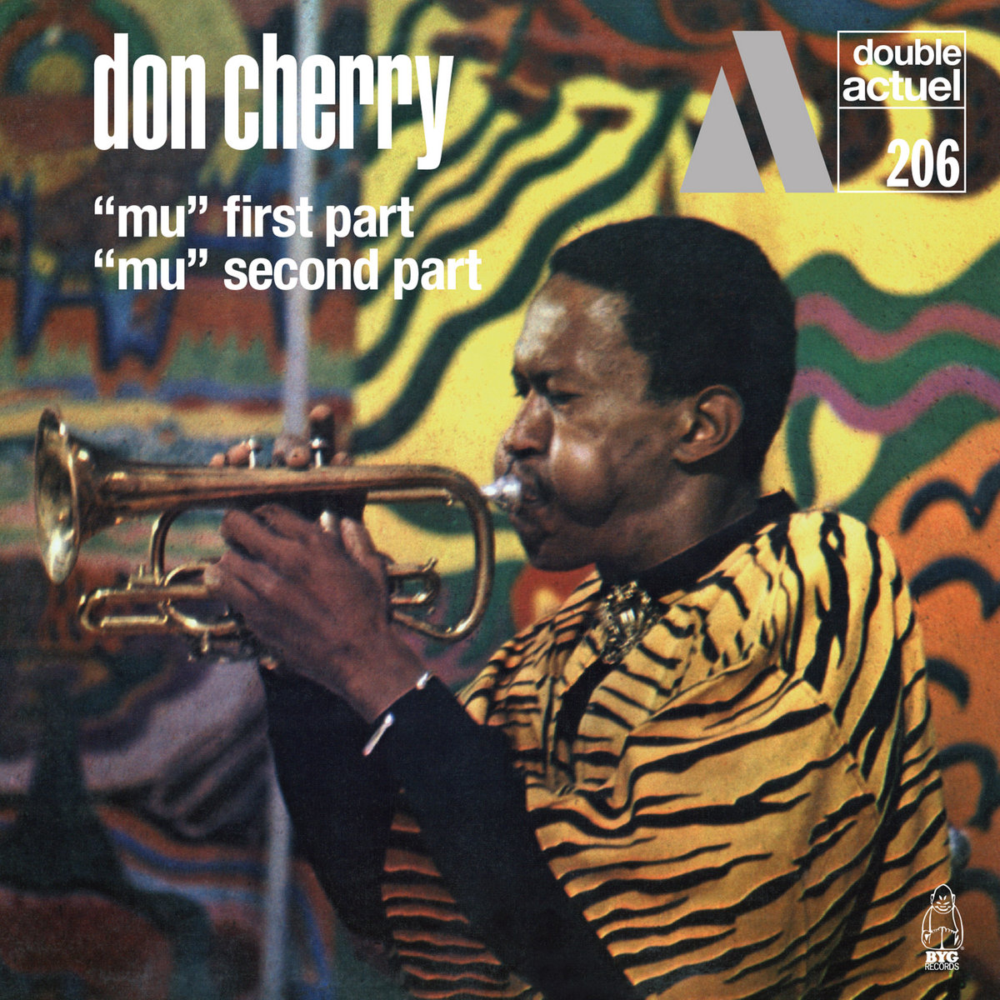

Eternal Rhythm


Pubblicato a settembre 1969. Registrato l'11 e il 12 novembre 1968.
Cliccare sulle immagini per ascoltare!
Pubblicato a settembre 1969. Registrato l'11 e il 12 novembre 1968.


Pubblicato nel 1971. Registrato il 22 agosto 1969.